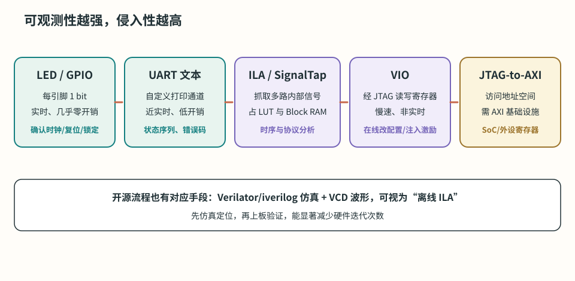

硬件调试：怎样把不可见的内部信号“看到”
FPGA 里没有断点、没有 watch window。调试的本质，是在有限的 I/O 上逐层提高对内部状态的可观测性，同时控制这种观测本身带来的资源与时序代价。
01 / 硬件调试为什么比软件难？
一段 RTL 仿真波形完美、也通过了所有 testbench，烧到板上却“不对”。你本能想加一行 log——但设计里没有 CPU，没有 printf，也没有断点。你能直接使用的，只有芯片封装上有限数量的引脚。
仿真是白盒：任何内部信号都能随时打印。真实硬件的默认状态却是黑盒：除非你主动把内部信号引出来或捕获下来，否则外部无法观测。商业工具（ILA、SignalTap）与开源流程（VCD 波形）提供的都是同一件事——把内部状态从黑盒变成可观察。
而“看到”是有代价的：任何调试逻辑都要在器件里占用资源，还可能改变原本的布局与路径延迟。因此调试的第一个决策不是“看什么”，而是用多大的可观测性去换多少确定性。
02 / 可观测性的五个层次
实践中应该从最轻的手段开始，逐步加码。按侵入性从低到高排列：
| 手段 | 能看到什么 | 侵入性与代价 |
|---|---|---|
| LED / 空闲 GPIO | 每引脚 1 bit 状态 | 极低，但信息量极小 |
| UART 打印模块 | 自定义文本/状态码序列 | 低，但需占用一个串口 |
| 片上逻辑分析仪（ILA/SignalTap） | 多路信号的时序波形与触发前后 | 中：占 LUT 与 Block RAM，影响布局布线 |
| 虚拟 I/O（VIO） | 经 JTAG 读写内部寄存器 | 中：慢速、非实时，适合慢控制 |
| JTAG-to-AXI | 处理器地址空间内任意寄存器 | 高：需 AXI 基础设施 |

先确认时钟是否在跳、复位是否释放、锁相环是否锁定，再去核实更复杂的状态机与数据通路。跳过前面的基础检查直接上 ILA，往往会被大量波形数据淹没，反而无法定位真正的故障点。
03 / FSM 调试：先把状态引出来
大部分“板上行为不对”最后都会落到状态机上：跳转条件遗漏、状态编码重复、或者组合输出上的毛刺误触发了跳转。当内部状态不可见时，你只能看到最终的输出，“为什么跳到这里”无从回答。最小成本的改法是：把当前状态编码引到空闲引脚或串口。
// 把已寄存的状态同步引出，便于在示波器/逻辑分析仪上观察
reg [3:0] state_debug;
always @(posedge clk) begin
if (!rst_n) state_debug <= 4'd0;
else state_debug <= current_state; // current_state 为状态寄存器
end
assign dbg_state = state_debug; // 接到空闲 GPIO（或再经 UART 发送）注意 current_state 本身如果是寄存器，就已经是时钟沿采样后的值；再打一拍只是为了把信号可靠地送到引脚，而不是“消除毛刺”的万能手段——真正的毛刺风险来自组合逻辑产生的跳转条件，需要在 RTL 层面审查。
比 GPIO 更方便的做法是把状态序列通过 UART 打印出来，例如看到 IDLE → RD → WR → IDLE 这样的跳转历史。两种手段的共同点是：把不可见的控制流变成外部可读的序列。
(* mark_debug = "true" *)）标记要探测的信号，让它不被优化掉，随后在网表调试界面把标记的信号连接到 ILA。这比在 RTL 里硬写给调试用的引脚更灵活，但具体语法与流程应以官方文档为准。04 / 片上逻辑分析仪：ILA 与 SignalTap
片上逻辑分析仪（Vivado 的 ILA、Quartus 的 SignalTap II）把采样逻辑嵌进设计：它按某个采样时钟记录若干探针信号，当触发条件满足时把这段波形存入片上 RAM，再经 JTAG 读回主机。它让你能看到“触发那一刻前后”的内部时序，是硬件调试中信息量最大的单件工具。
配置一个 ILA 需要回答四个问题：
| 配置 | 含义 | 需要权衡的地方 |
|---|---|---|
| 采样时钟 | 探针在该时钟沿采样 | 必须与被观察逻辑的时钟域一致 |
| 探针信号与位宽 | 要捕获的内部信号 | 数量越多，占用的 LUT/布线越多 |
| 采样深度 | 能存下多少个样本 | 越深占用越多 Block RAM |
| 触发条件 | 何时开始捕获 | 组合条件可精确定位，过宽则数据被淹没 |
波形分析时，把触发位置设在窗口中间通常比设在开头更有用：你能同时看到触发前的“背景”和触发后的“响应”。对于总线信号，工具提供的协议解码可以把串行位流还原成事务，省去逐位分析。AMD 在 UG908 中描述了 ILA 与硬件管理器的使用流程，UG949 则在调试方法学层面给出了关于片上调试开销的建议。

一次 ILA 抓取得到的只是某次运行、某个触发条件下的快照。它不证明其他条件也正确，更不证明时序已收敛——这三者是不同层次的证据，不能互相代替。
05 / VIO：在线读写的边界
ILA 只能“看”。当你想在调试过程中修改一个寄存器值、注入一个单脉冲激励、或在不上重下位流的前提下改变状态机的外部条件时，就需要虚拟 I/O（VIO）。VIO 经 JTAG 在主机调试界面上提供一组虚拟输入/输出：输出端把值驱动到设计内部，输入端从设计内部读回当前值。
典型用途包括：在线修改阈值/配置寄存器，立即观察系统反应；模拟一次按键脉冲（真实板上需要接线和机械按钮）；把状态机的外部条件接到 VIO 上，手动构造极端组合。
与 ILA 一样，VIO 也会占用器件资源并影响实现结果。它适合作为调试期的手段：搞清楚问题后应当移除或条件化调试逻辑，再重新实现正式版本。
06 / 缩短迭代周期与调试计划
硬件调试的真正痛点是迭代周期长：改一行 RTL → 重新综合 → 布局布线 → 生成位流 → 下载 → 观察。缩短周期的有效手段并不是“更快地重复”，而是减少每一轮需要重复的东西：
- 先仿真、再上板。 把能在 testbench 里覆盖的场景先在软件里跑完，不要把仿真能回答的问题带到硬件上。本仓的 RTL 自检（见第 08 章）就是这一原则的小型实现。
- 先提出假设，再选探针。 基于代码审查列出 2～3 个最可疑的方向，只给这些信号加探针；确认或排除后再扩展，而不是一次性全量扫描。
- 复用已实现的调试布置。 在 Vivado 中可以利用增量实现与参考 checkpoint，让只改动局部 RTL 时调试逻辑的位置与布线尽量不被打破；具体效果取决于工程结构，需实际对比报告。
- 提前设计可调试性。 在写 RTL 时就规划预留 GPIO、串口通道与要标记的调试信号，而不是出了问题再回头改。

思考练习：为什么“先上 ILA 抓一波”往往不如先查复位和时钟？
因为 ILA 需要采样时钟才能工作。如果采样时钟本身就没有、复位没有释放、或锁相环未锁定，ILA 要么不触发，要么抓到的是无意义的恒定值。先把这些基础条件用 LED/GPIO 确认，才能保证 ILA 的波形有意义。